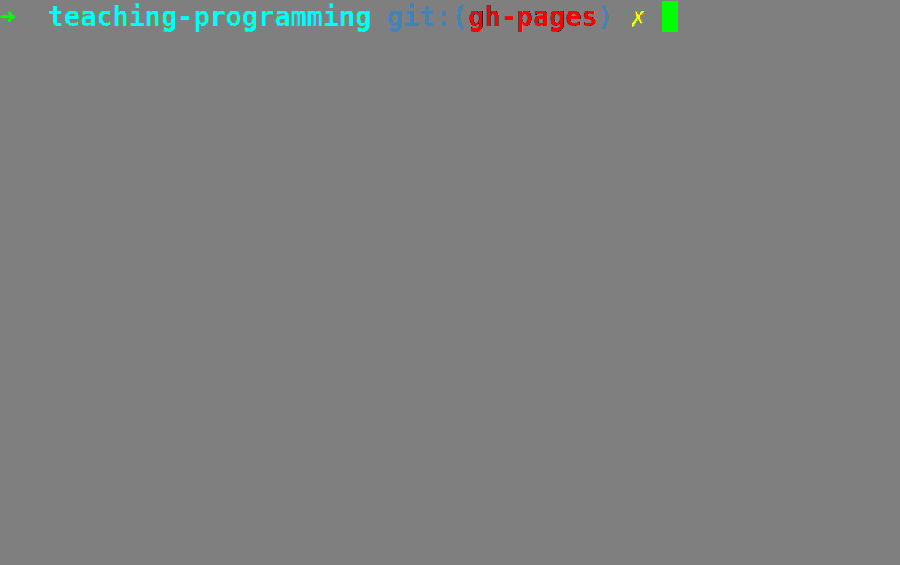

We've all learned to program
... the hard way
#include <stdio.h>
#include <stdlib.h>
int main(){
printf("Hello World!");
}
object helloworld extends App{
println( "Hello world" )
}
console.log("Hello, world!");
Programs are made for running

People don't really want to program
They want to create stuff
1. The toolchain is the new programming language
2. The full stack is the new architecture.
3. Deployment is the new running a command.
4. Team programming is tne new solo programming.
And Slack is the new mailman
5. Best practices are the new This can be done, but shouldn't
#!/usr/bin/env perl
# This program does zilch
6. StackOverflow is the new RTFM
7. Testing is the new debugging
But the old debugging is the new debugging too
8. The browser is the new operating system
And JavaScript the new bash
Fortunately, JS is a language
... almost
9. Loving the error messages is the new hating the error messages
10. Unicode is the new ASCII,
immutable data structures are the new constants
and multi-paradigm programming is the new procedural programming
Let's write the book For People Who Can't Program Good And Wanna Learn To Code Other Stuff Good Too